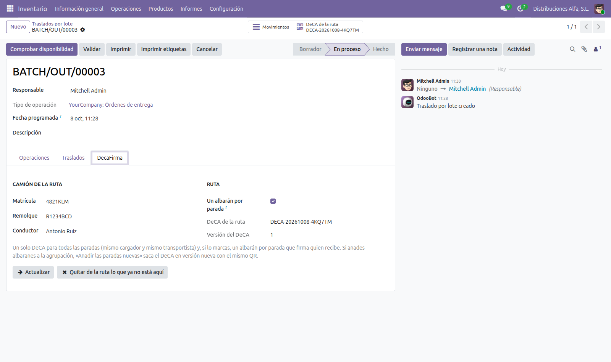

Spanish road freight rules allow a single electronic control document (DeCA) for a whole delivery route when every stop has the same shipper and the same carrier (Resolution of 5 June 2026, section six). This module issues an Inventory batch transfer as that route in DecaFirma.

Nothing leaves Odoo until you enter your own DecaFirma API key in Settings. When a route is issued or updated, Odoo sends DecaFirma the data the DeCA requires for every stop: names, tax IDs (NIF) and addresses of your company, the customers, the carrier and the driver, vehicle plates, products, packages and weights.
decafirma_stock (DecaFirma Inventory) and Batch Transfers (stock_picking_batch).
This module is installed automatically when both are.Questions? juan.canton@francodesystems.com · Francodesystems